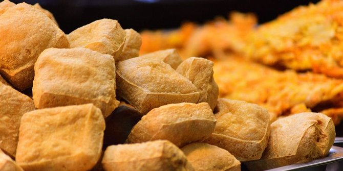

Kesenian Tradisional
Kuda Renggong
Kuda renggong adalah seni tradisional yang populer di Sumedang, karena kuda renggong merupakan atraksi yang berupa pertunjukan seekor kuda melakukan gerakan menari dan berjalan mengikuti suara musik tradisional sunda yang biasa disebut kendang pecak. Kuda Renggong sering dipertontonkan pada acara sunatan, sebelum seorang anak dikhitan, seorang anak diarak mengelilingi kota diatas punggung kuda renggong dan diikuti oleh anggota keluarga yang ikut menari didepannya lalu berkeliling dari satu desa ke desa lainnya.
Musik pengiring anak dimainkan dengan penuh semangat, musik yang semakin lama malah semakin meriah. Alat musik yang digunakan kuda renggong adalah kendang, bedug, goong, kecrek, genjring kemprak, ketuk dan terompet.
Ketika sudah mengelilingi desa dan sampai dirumah, anak yang disunat diturunkan dari kuda renggong. Setelah itu dilanjutkan dengan acara demonstrasi kuda renggong dan saweran (menaburkan uang logam dan beras putih) nah biasanya ini acara yang paling ditunggu tunggu oleh anak anak desa.
Kesenian Reog Sunda
Kesenian reog sunda merupakan kesenian tradisional yang disebut dog-dog oleh masyarakat sumedang, Alat musik yang digunakan terdiri atas calung, angklung dan kendang pencak. Kesenian Reog dipentaskan saat merayakan hari kemerdekaan Republik Indonesia. Biasanya acara Reog sunda dipadukan anatara musik, tari dan kritik. Kritik yang bersifat sosial dan dikemas dalam bentuk menghibur sekaligus menyampaikan kritikan terhadap pemerintah ataupun masyarakat. Makna yang disampaikan dalam Reog sunda biasanya menyangkut agama, pendidikan atau pembangunan daerah setempat.
Kesenian Reog sunda dimainkan oleh empat orang, satu dalang, satu wakil dan dua orang lainnya sebagai pembantu. Dalang berperan untuk mengendalikan permainan reog lalu wakil berperan sebagai penengah dan dua orang pembantu berperan sebagai melawak dengan nyanyian atau melawak dengan tingkah yang berguna untuk mengundang tawa penonton.
Tarawangsa
Tarawangsa adalah jenis kesenian masyarakat agraris tradisional di Jawa Barat. Dalam pertunjukannya, kesenian ini memiliki kekhasan dalam hal instrumen musiknya, yaitu menggunakan sebuah alat musik yang dimainkan dengan cara digesek. Dalam tulisan Teguh Permana mengutip pendapat Luki Hendrawan, secara etimologi,Tarawangsa berasal dari tiga gabungan kata yakni Ta - Ra - Wangsa. Ta merupakan akronim dari kata Meta
berasal dari bahasa Sunda yang berarti pergerakan, lalu Ra
berarti api yang agung sama dengan arti Ra dalam bahasa Mesir analogi api yang agung adalah matahari. Dan yang terakhir Wangsa
sinonim dari kata Bangsa, manusia yang menempati satu wilayah dengan aturan yang mengikatnya. Jadi Ta-Ra-Wangsa berarti kisah kehidupan bangsa matahari
. Dengan kata lain, Tarawangsa merupakan kesenian penyambutan bagi hasil panen padi tumbuhan yang sangat bergantung pada matahari sebagai simbol rasa syukur terhadap Tuhan YME. Tarawangsa merupakan ensemble kordofon (alat musik dawai yang sumber bunyinya berupa ruang resonator) dua alat musik. Yang satu dinamakan tarawangsa itu sendiri, dimainkan dengan cara digesek dan yang satunya dinamakan jentreng dimainkan dengan cara dipetik.
Bentuk alat musik Tarawangsa ini sangat berbeda dengan alat musik gesek lainnya, seperti rebab. Resonator tarawangsa terbuat dari kayu berleher panjang dengan jumlah dawai antara 2 sampai 3 utas. Tarawangsa Pangguyangan ini tidak jauh berbeda dengan tarawangsa Sumedang, namun dari segi panjangnya leher, serta motif ukiran yang menghiasi bagian kepala jelas sekali berbeda. Jumlah kawat yang digunakan tarawangsa Pangguyangan berjumlah dua, tetapi setelah diselidiki lebih dekat ternyata tarawangsa Pangguyangan pada masa lalu menggunakan tiga kawat, dan itu masih terlihat dari lubang untuk pureut (pemutar kawat) nya.
Bangreng
Bangreng adalah jenis kesenian terbang yang menggunakan ronggeng, yaitu wanita yang menjadi juru sekar/penyanyi. Jenis kesenian ini ada di Kecamatan Tanjungkerta, Kabupaten Sumedang.Awalnya kesenian Bangreng yang berasal dari kata terbang dan ronggeng tersebut, pada abad XV bernama Terbang karena alat yang digunakan adalah terbang. Seni terbang dijadikan sebagai sarana untuk menyebarkan agama Islam, oleh Sunan Gunung Jati dan keempat utusannya. Untuk memudahkan masyarakat menerima ajaran agama Islam, Eyang Wangsakusumah, salah satu utusan Sunan Gunung Jati menggambarkan bahwa kata terbang yang terdiri atas 7 huruf menggambarkan 7 hari (Senin, Selasa, Rabu, Kamis, Jumat, Sabtu, dan Minggu) agar melaksanakan sholat 5 waktu. Dalam menyebarkan agama Islam tersebut Eyang Wangsakusumah menyelingi dengan lagu-lagu Islam seperti sholawat. Pada abad XVII seni Terebang mengalami perkembangan dan dipentaskan di acara-acara keagamaan.Nama Terebang mengalami perubahan nama menjadi gembyung, perubahan tersebut juga diikuti dengan penambahan beberapa alat-alat musik, seperti goong, kulanter, dan kecrek. Namun nama Gembyung tidak bertahan lama, dan berubah menjadi Bangreng.
Kesenian Bangreng saat ini berfungsi sebagai Sarana hiburan, yaitu sering dipentaskan pada acara-acara pernikahan, sunatan.Sarana upacara, masyarakat Tanjungkerta menganggap bahwa kesenian terbang merupakan media komunikasi dengan karuhun, mereka juga menganggap bahwa segala kekuatan ada di luar jangkauan manusia. Maka mereka menghadirkan seni terbang sebagai acara ruwatan.Sarana pertunjukan. Bangreng dimodifikasi sedemikian rupa dan disesuaikan dengan kebutuhan pertunjukan, bahkan kadang-kadang grup kesenian Bangreng memenuhi keinginan bagi yang memanggilnya untuk pentas.
Makanan Tradisional
Tahu Sumedang

Tahu menjadi salah satu panganan yang sangat familier di Indonesia. Selain rasanya yang nikmat, tahu juga menjadi salah satu sumber protein nabati yang harganya terbilang cukup murah.Tahu Sumedang memiliki kekhasannya tersendiri dibanding tahu lainnya. Bagian luarnya yang berwarna kecoklatan akan terasa renyah namun empuk saat gigitan sampai ke dalam.Tahu Sumedang akan lebih nikmat jika dipadukan dengan makanan buras ditambah dengan cabe rawit hijau. Selain dapat dijadikan sebagai oleh-oleh, tahu Sumedang juga bisa menjadi bekal makanan bagi para pemudik.Makanan yang berasal dari olahan kedelai ini, biasanya akan dibungkus dengan menggunakan bongsang atau sejenis anyaman bambu dengan dilapisi daun pisang jika hendak dibawa pergi atau mudik.
Ubi Cilembu
Ubi Cilembu menjadi makanan khas Kabupaten Sumedang lainnya yang cukup terkenal setelah tahu Sumedang. Ubi Cilembu dikenal karena rasanya yang berbeda dengan ubi-ubi lainnya.Kekhasan dari ubi Cilembu sendiri adalah saat dipanggang akan mengeluarkan cairan kecoklatan mirip seperti madu. Rasanya yang gurih menjadikan ubi Cilembu sebagai makanan idola di Kabupaten Sumedang.Keunikan lainnya dalam hal pengolahannya. Ubi Cilembu ini tidak cocok jika dimasak lantaran akan kandungan gulanya yang tinggi menyebabkannya mudah gosong. Ubi Cilembu juga tidak cocok jika di rebus ataupun dikukus lantaran akan mengurangi atau menghilangkan cairan yang menyerupai madu.Ubi Cilembu sangat nikmat jika disajikan dengan teh panas pahit. Lebih nikmat lagi saat suhu udara dingin sedang dingin, bisa pagi, sore ataupun malam.Karena pengolahannya yang dipanggang, ubi Cilembu cenderung cukup awet dan layak dijadikan sebagai buah tangan.
Opak Conggeang
Opak atau makanan berbahan dasar beras ketan ini menjadi salah satu makanan khas Sumedang lainnya. Makanan yang dimasak dengan cara dipanggang ini memiliki rasa yang khas, gurih dan renyah.Dinamakan opak Conggeang lantaran wilayah Conggeang di Sumedang menjadi salah satu sentra pembuat makanan tersebut. Bahkan sebuah tugu opak telah dibangun pada tahun 2011 untuk mempertegas kawasan tersebut sebagai sentra pembuat opak.Diolah secara tradisional, opak Conggeang dapat ditemui di toko-toko atau tempat penjualan oleh-oleh di Sumedang. Opak serupa sebenarnya diproduksi juga di wilayah Cimanggung dan Jatinunggal.
Sawo Sukatali
Berbicara buah-buahan, Indonesia memiliki beragam macam buah-buahan yang terkenal, sebut saja ada apel Malang, Durian Medan, Nanas Subang dan buah lainnya. Nah di Kabupaten Sumedang, selain terkenal dengan oleh-oleh tahunya, ada juga jenis buah yang menjadi ciri khas warga lokal, yakni sawo Sukatali.Sawo Sukatali memiliki ciri khasnya tersendiri. Wujudnya yang terlihat seperti keras namun begitu empuk saat digigit dengan kandungan air serta takaran rasa manisnya yang begitu pas.Buah yang memiliki nama latin manilkara zapota ini menjadi salah satu keunggulan bagi warga Desa Sukatali di Sumedang.Buah sawo yang ditata menyerupai gundukan berbentuk prisma, menjadi pemandangan serta daya tarik tersendiri bagi para wisatawan yang melintas. Mereka menjajakannya di sebuah warung-warung kayu yang berderet di pinggiran Jalan.Harga sawo Sukatali bervariasi mulai dari sawo kecil sekitar Rp 12,5 ribu per kilogramnya, sawo sedang sekitar Rp 15 ribu per kilogramnya dan sawo ukuran besar Rp 17 ribu per kilogramnya.Bagi anda yang berminat untuk membawa sawo Sukatali sebagai oleh-oleh mudik maka anda bisa menuju Jalan Sumedang - Wado. Disana akan tampak berjejer warung-warung yang menjajakan sawo Sukatali.